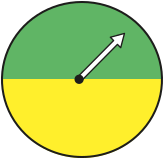
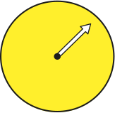
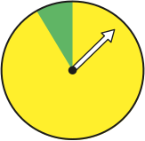
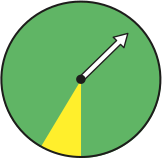
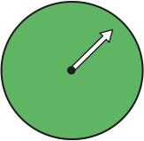

회전판을 돌릴 때 화살이 초록색에 멈출 가능성을 비교해 봅시다.
회전판을 돌릴 때 각 회전판에서 화살이 어느 색에 멈출 수 있는지 모두 선택해 보세요.
-
가

-
나

-
다

-
라

-
마

화살이 초록색에 멈출 가능성이 반반인 회전판을 찾아 기호를 선택해 보세요.
화살이 초록색에 멈출 가능성이 반반인 회전판을 찾아 기호를 선택해 보세요.
회전판 다와 라 중 화살이 초록색에 멈출 가능성이 더 높은 회전판을 찾아 기호를 선택해 보세요.
화살이 초록색에 멈출 가능성이 반반인 회전판을 찾아 기호를 선택해 보세요.